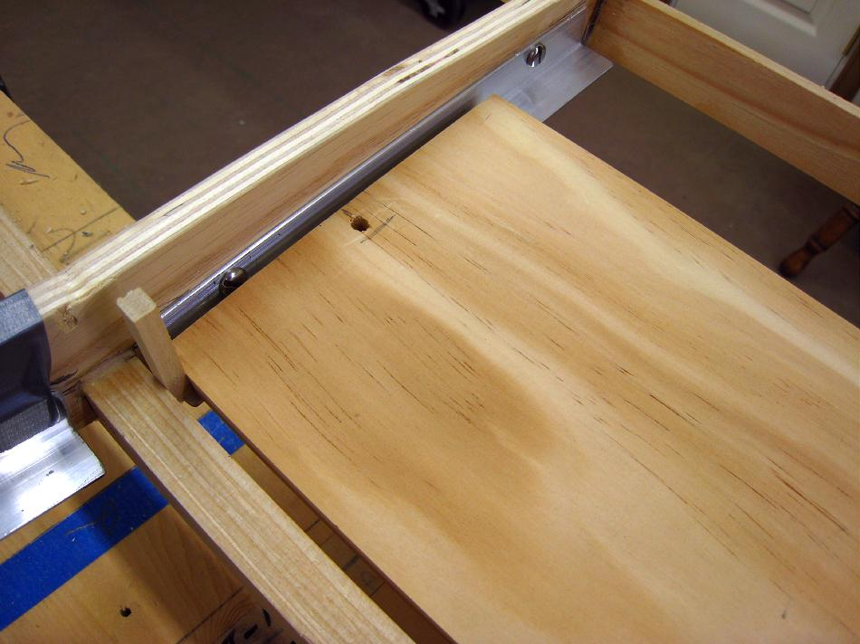

| Floor | Menu Previous Page Next Page |
|

After the fore and aft plates are screwed in place, align the wood floor using 1/4" spacers at each end. Drill a hole through the center of the floor and the plate below. One machine screw per floor end is adequate to hold the floor in place.
|
|